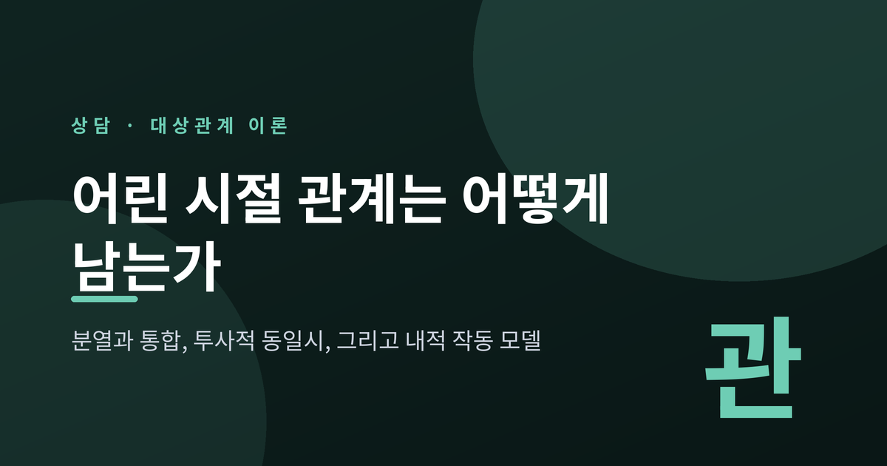
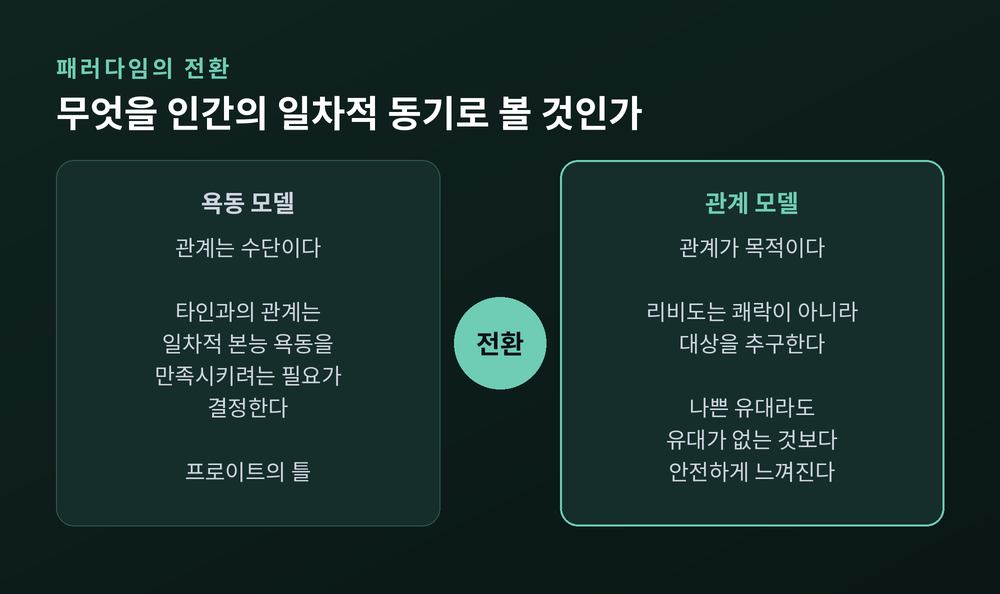
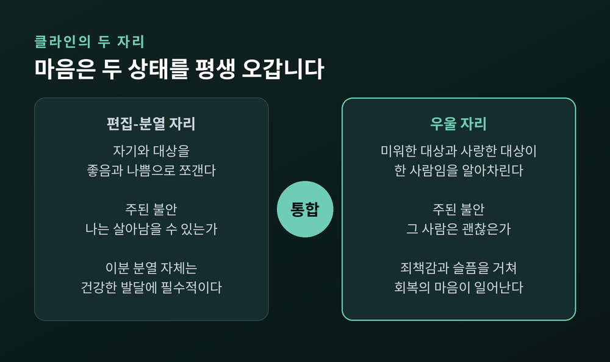
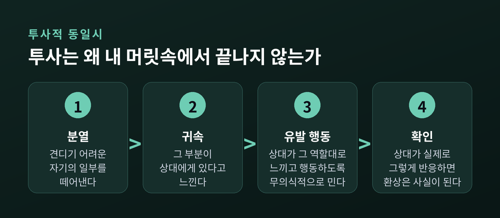
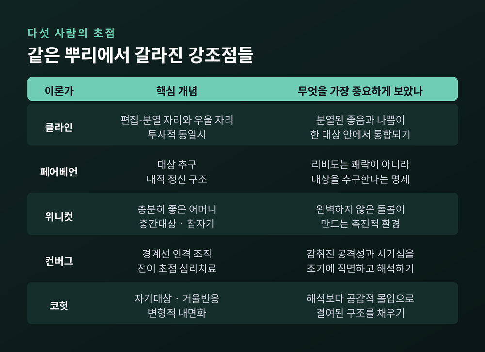
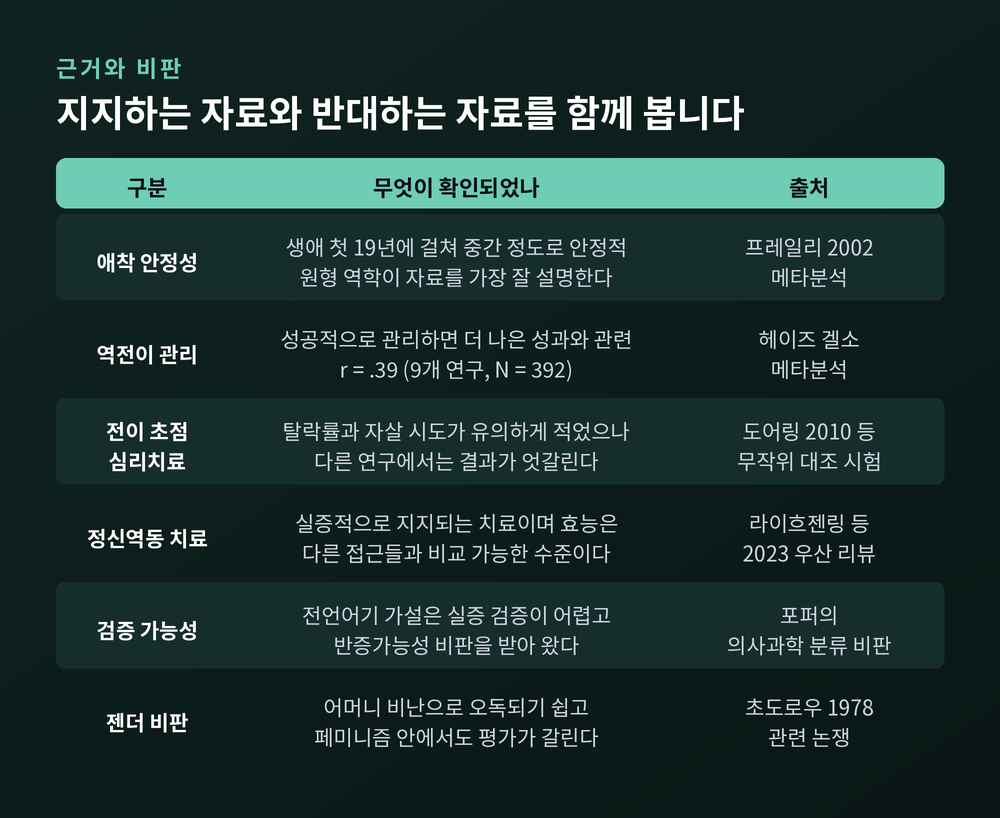

이번 글에서는 대상관계 이론을 정리해 보겠습니다. 어린 시절의 관계가 마음속에 어떻게 남아, 지금 우리가 사람을 대하는 방식을 움직이는지 다루는 이론입니다. 클라인부터 위니컷, 컨버그와 코헛까지 갈래를 따라가고 실증적 지지와 비판도 함께 적겠습니다.
세 줄 요약

정신분석에서 '대상'은 물건이 아닙니다. 애정과 욕동이 향하는 상대를 뜻합니다. 대개는 사람, 그중에서도 초기 양육자입니다.
프로이트의 틀에서 관계는 수단이었습니다. 타인과의 관계는 일차적 본능 욕동을 만족시키려는 개인의 필요에 의해 결정된다고 보았습니다. 그린버그와 미첼은 1983년 『Object Relations in Psychoanalytic Theory』에서 이를 '욕동 모델'이라 부르고, 그에 맞서는 '관계 모델'과의 오랜 대립으로 정신분석의 역사를 다시 썼습니다. 이 책은 뒷날 관계 정신분석의 창립 문헌으로 평가받습니다.
전환을 가장 선명한 한 문장으로 못 박은 사람은 페어베언입니다. 리비도는 일차적으로 쾌락을 추구하는 것이 아니라 대상을 추구한다. 그는 발달 중인 자아의 대상관계 장애가 모든 정신병리의 궁극적 기원이라고 보았습니다. 프로이트의 이드·자아·초자아 대신 중심자아, 리비도적 자아, 반리비도적 자아라는 세 구조를 제시하기도 했습니다.
이 명제에는 뼈아픈 따름정리가 하나 붙습니다. 사람이 연결을 위해 만들어진 존재라면, 고통스러운 초기 관계조차 버려지지 않고 내면화된다는 것입니다. 나쁜 유대라도 유대가 없는 것보다는 안전하게 느껴지기 때문입니다. 왜 어떤 사람은 자신을 힘들게 하는 관계 방식을 몇십 년째 되풀이하는가. 페어베언의 답은 간명합니다. 오래전에 만들어진 내적 대상에 여전히 충성하고 있기 때문입니다.

멜라니 클라인(1882~1960)은 이 이론의 창시자로 가장 자주 거론되는 인물입니다. 그가 남긴 두 개의 '자리(position)'는 지금도 임상 언어로 쓰입니다.
첫째는 편집-분열 자리입니다. 클라인은 이것을 생후 첫 몇 개월에 특징적인 불안, 방어, 대상관계의 성좌로 규정했습니다. 여기서 가장 중요한 특징은 분열입니다. 자기와 대상을 모두 좋음과 나쁨으로 쪼개고, 처음에는 둘 사이에 통합이 거의 없습니다.
젖먹이의 세계에는 한 어머니가 아니라 두 어머니가 있습니다. 좌절시키고 박해한다고 느껴져 미움받는 '나쁜 젖가슴', 그리고 사랑하고 채워준다고 느껴지는 '좋은 젖가슴'입니다. 나쁜 경험은 전능하게 부인되고 좋은 경험은 이상화되어 과장됩니다. 그렇게 나뉜 두 대상이 다시 안으로 들어오고, 투사와 내사가 반복됩니다.
여기서 오해하기 쉬운 대목을 짚겠습니다. 이 분열은 병이 아닙니다. 클라인 트러스트의 설명에 따르면 이 '이분 분열'은 건강한 발달에 필수적입니다. 충분한 좋은 경험을 안전하게 붙들어 둘 수 있어야, 그것이 나중에 상반된 측면들을 통합할 중심 핵이 되기 때문입니다.
주의할 것은 따로 있습니다. 대상이나 자기가 여러 작은 조각으로 쪼개지는 '파편화'입니다. 이것이 지속되면 아직 통합되지 않은 자아가 오히려 약해집니다.
그리고 이 자리는 유아기에만 있는 것이 아닙니다. 현대적 이해로는 편집-분열적 심리 상태가 평생에 걸쳐 중요한 역할을 합니다. 누군가를 완전한 악인으로, 또 누군가를 흠 없는 사람으로 느끼는 순간이 우리에게 찾아오는 이유입니다. 클라인은 이 두 자리를 단계라기보다 오가는 마음 상태로 그렸습니다.
우울 자리는 보통 생후 첫해 중반쯤 처음 경험되고, 이후 평생에 걸쳐 간헐적으로 되돌아옵니다.
핵심은 하나의 자각입니다. 내가 미워한 그 대상이, 내가 사랑하는 바로 그 대상이라는 사실을 알아차리는 것입니다. 앞의 자리에서는 이상적인 대상과 박해하는 대상이 따로 있었습니다. 그때의 불안은 '나는 살아남을 수 있는가'였습니다. 우울 자리에서는 불안이 하나 더 생깁니다. '그 사람은 괜찮은가.'
사랑과 미움이 한 인물 안에서 겹치는 것을 견딜 수 있게 되면, 회한 섞인 죄책감과 저릿한 슬픔이 따라옵니다. 그리고 손상시켰다고 느끼는 것을 되돌리려는 충동, 곧 회복의 마음이 일어납니다. 이때 대상은 더 실재하고 분리된 존재로 느껴지고, 그를 전능하게 통제하려는 힘은 줄어듭니다.
성숙이 상실 및 애도와 붙어 있다는 말은 이 지점에서 나옵니다. 상대를 온전한 타인으로 인정한다는 것은, 내 뜻대로 되지 않는 사람으로 인정한다는 뜻이기 때문입니다.
이 자리는 좁은 의미의 우울증이 아닙니다. 클라인 계열에서는 '우울 자리 기능'이라는 표현을 씁니다. 개인적 책임을 질 수 있고, 나와 상대를 분리된 존재로 지각할 수 있는 상태를 가리킵니다. 반대로 그 고통이 감당되지 않으면 조증적·강박적 방어가 작동하거나, 다시 앞의 분열과 편집으로 물러섭니다.

대상관계 이론에서 관계를 설명하는 가장 강력한 도구는 투사적 동일시입니다.
정의는 이렇습니다. 자기 또는 내적 대상의 일부가 분열되어 외부 대상에게 귀속되는 무의식적 환상. 투사되는 것은 나쁜 것일 수도, 좋은 것일 수도 있습니다.
여기까지는 프로이트의 '투사'와 크게 다르지 않습니다. 결정적인 차이는 다음 문장에 있습니다. 이 환상은 받는 사람이 그 환상에 맞게 느끼고 행동하도록 유도하는 행동을 동반할 수 있습니다. 무의식적으로 의도된 유발 행동입니다.
즉 투사는 내 머릿속에서 끝나지 않습니다. 상대를 실제로 그 역할에 밀어 넣습니다. 버림받을 것을 두려워하는 사람이 상대를 계속 시험하다가 끝내 상대를 지치게 만드는 흐름을 떠올려 보시면 됩니다. 예언이 스스로를 실현시키는 구조입니다.
이 환상에는 '가져오는' 성질도 있다고 봅니다. 자기 정신의 일부를 밖으로 내보내는 데 그치지 않고, 상대의 마음에 들어가 원하는 부분을 얻으려는 환상까지 포함한다는 것입니다.
여기서 한 가지 부탁을 드리고 싶습니다. 이 개념을 상대를 규정하는 도구로 쓰지 않으시길 권합니다. 대상관계의 언어는 진단표가 아닙니다. 관계에서 반복되는 괴로움이 뚜렷하다면, 혼자 해석하기보다 전문 상담기관이나 정신건강의학과에서 함께 살펴보시는 편이 안전합니다.

도널드 위니컷(1896~1971)은 소아과 의사 출신 정신분석가였습니다. 영국정신분석학회 회장을 두 차례 지냈고, 앞의 이론가들과는 결이 다른 온기를 남겼습니다.
첫째, 충분히 좋은 어머니입니다. 1960년에 내놓은 개념입니다. 이상적인 양육자는 완벽한 사람이 아니라, 아이의 내적 잠재력이 참자기로 펼쳐질 수 있는 '촉진적 환경'을 제공하는 사람입니다. 조건은 두 가지뿐입니다. 방치하지 않을 것, 그리고 과보호하지 않을 것.
둘째, 중간대상입니다. 아이가 놓지 못하는 담요나 인형을 말합니다. 위니컷이 강조한 것은 물건 자체가 아니라 그것이 표상하는 성취입니다. 아이가 어머니를 자기 바깥의 분리된 존재로 지각하기 시작했다는 신호이고, 개인적 성장과 창조적 삶의 표시입니다.
셋째, 참자기와 거짓자기입니다. 참자기는 자발적이고 진정한 핵심입니다. 거짓자기는 타인의 기대에 맞추기 위해 지어 올린 순응적 표면입니다.
거짓자기를 악으로 읽지 않는 편이 좋겠습니다. 사회생활은 어느 정도의 순응 위에서 굴러갑니다. 문제는 그 표면이 두꺼워져 안쪽의 자발성이 숨을 못 쉴 때 생깁니다.
대상관계의 흐름은 미국에서 두 갈래로 나뉩니다. 오토 컨버그와 하인즈 코헛입니다.
코헛의 자기심리학은 갈등의 심리학에서 결핍의 심리학으로 무게를 옮겼습니다. 많은 사람이 내적 갈등보다 필요한 심리 구조의 결여로 괴로워한다는 관점입니다. 코헛은 이를 '죄책감의 인간'과 '비극적 인간'의 차이로 표현했습니다.
코헛의 열쇠말은 자기대상입니다. 타인에 대한 경험 가운데, 그 지지 기능을 통해 내 자기와 이어지는 차원을 뜻합니다. 기능은 셋으로 정리됩니다. 보여지고 이해받고 인정받으려는 거울반응, 존경하는 대상과 융합해 힘을 얻으려는 이상화, 다른 사람과 근본적으로 닮았다고 느끼려는 쌍둥이 관계입니다. 치료에서는 이 자기대상 전이를 성급히 해석하지 않고 허용해, 내담자가 치료자의 자질을 차차 자기 것으로 소화하도록 둡니다. 코헛은 이 과정을 변형적 내면화라 불렀고, 공감적 몰입을 관찰 방법이자 치료 도구로 삼았습니다.
컨버그는 방향이 다릅니다. 자기애를 정신내적 갈등에서 비롯되는 것으로 보고 해석을 강조합니다. 환자의 감춰지거나 드러난 공격성을 조기에 직면하고 해석할 것을 주장한 것으로 유명합니다. 초기 좌절에서 생긴 분노, 미움, 냉담, 만성적이고 강렬한 시기심을 치료 안에서 다루어야 한다고 봅니다. 진단 틀에서도 자기애성 인격장애를 경계선 인격 조직의 하위 유형으로 놓습니다.
한쪽은 견디며 비춰주고, 다른 한쪽은 이름 붙여 마주 보게 합니다. 두 전통은 지금도 완전히 통합되지 않았습니다.

대상관계 이론에는 오래된 약점이 있습니다. 측정하기 어렵다는 것입니다. 이 지점을 파고든 사람이 존 볼비입니다.
볼비는 정신분석, 특히 대상관계 이론에서 영감을 받되, 당대 동물행동학과 인지심리학의 언어로 다시 짰습니다. 그 결과가 내적 작동 모델입니다. 내면화와 대상 표상이라는 정신분석 개념을 가져와 정보처리 모형으로 옮긴 셈입니다.
내적 작동 모델은 세 요소로 이뤄집니다. 자신이 사랑과 지지를 받을 만한 존재인가에 대한 자기 모델, 애착 인물이 믿을 만하고 반응적인가에 대한 타인 모델, 그리고 그 둘의 관계에 대한 모델입니다. 주 양육자와의 상호작용이 내면화된 결과이며, 자동적으로 작동합니다. 볼비는 주 양육자가 이후 관계의 원형이 된다고 보았습니다.
그렇다면 그 원형은 얼마나 오래 갈까요. 프레일리는 2002년 『Personality and Social Psychology Review』에 실은 메타분석에서 이를 정면으로 다뤘습니다. 초기 표상이 유지된다는 원형 관점과, 새 경험에 따라 수정된다는 수정주의 관점을 각각 수학 모형으로 만들어 종단 자료에 검증했습니다.
결과는 이렇습니다. 애착 안정성은 생애 첫 19년에 걸쳐 중간 정도로 안정적이었고, 그 패턴은 원형 역학으로 가장 잘 설명되었습니다.
'중간 정도'라는 표현을 가볍게 넘기지 않으시면 좋겠습니다. 흔적은 남지만 운명은 아니라는 뜻입니다. 예전에는 초기 경험이 사람을 결정한다고 말했습니다. 지금은 초기 경험이 사람에게 기울기를 준다고 말합니다.
대상관계 이론이 상담실에서 쓰이는 방식은 단순합니다. 내담자가 과거의 관계 방식을 치료자와의 관계 안에서 되풀이하는 것을 전이라 부르고, 그것을 지금 여기의 자료로 삼습니다.
컨버그의 이론에 기반한 매뉴얼 치료가 전이 초점 심리치료(TFP)입니다. 근거는 갈립니다.
도어링 등이 2010년 『British Journal of Psychiatry』에 발표한 무작위 대조 시험은 여성 외래 환자 104명을 1년간 TFP 또는 경험 많은 지역사회 치료자의 치료에 배정했습니다. TFP군의 중도 탈락이 유의하게 적었고(38.5% 대 67.3%), 자살 시도도 유의하게 적었습니다(d = 0.8, P = 0.009).
클라킨 등이 2007년 보고한 연구는 결이 다릅니다. 90명을 변증법적 행동치료, TFP, 정신역동적 지지치료에 배정해 1년간 관찰했더니 세 치료 모두 우울·불안·심리사회적 기능·사회적 적응에서 유의하게 좋아졌습니다. 자살성은 TFP와 변증법적 행동치료가, 분노는 TFP와 지지치료가 개선을 보였습니다.
여기에 2006년 히센-블루 등의 연구에서는 TFP가 비교 치료보다 성적이 나빴습니다. 그래서 미국심리학회 임상심리분과는 TFP에 '강한 연구 지지이지만 논쟁적'이라는 이례적인 등급을 붙였습니다.
치료자 쪽에서 일어나는 반응은 역전이라 부릅니다. 헤이즈와 겔소 연구진이 정리한 세 편의 메타분석 결과가 흥미롭습니다. 역전이 반응 자체는 치료 성과와 약하게 역방향으로 관련되었습니다(r = −.16, 14개 연구, N = 973). 역전이 관리 요인은 그 반응을 줄였습니다(r = −.27, 13개 연구, N = 1,065). 그리고 성공적인 역전이 관리는 더 나은 성과와 뚜렷하게 관련되었습니다(r = .39, 9개 연구, N = 392).
읽는 방향은 분명합니다. 치료자가 아무 감정도 느끼지 않는 것이 목표가 아닙니다. 느낀 것을 알아차리고 다루는 능력이 결과를 가릅니다.
균형을 위해 반대편도 적겠습니다. 대상관계 이론은 오래 비판받아 왔습니다.
첫째, 임상 장면에 대한 과도한 의존입니다. 객관적 관찰이 아니라 진료실 안의 경험에 근거가 몰려 있습니다.
둘째, 검증 불가능한 영역에 대한 강조입니다. 이 이론은 아주 이른 전언어기 유아기에 압도적인 무게를 둡니다. 말을 못 하는 시기의 환상을 다루는 가설은 현실적으로 실증 검증이 어렵습니다.
셋째, 방법론의 문제입니다. 초기 이론가들은 실제 아동을 직접 관찰하는 대신, 성인 환자의 회고적 기억으로부터 정상 발달을 재구성했습니다. 정당화되기 어려운 외삽입니다.
넷째, 반증가능성입니다. 칼 포퍼는 정신분석의 주장이 너무 넓고 유연해서 어떤 결과든 수용할 수 있고, 그래서 반증할 수 없다며 의사과학으로 분류했습니다.
다섯째, 젠더 문제입니다. 낸시 초도로우는 정신분석에 내재한 젠더 편향을 비판하면서도 대상관계 이론의 도구를 가져다 썼습니다. 『The Reproduction of Mothering』(1978)에서 그는 양육이 거의 전적으로 어머니에게 맡겨진 노동 분배가 남녀의 관계 성향을 갈라놓는다고 보았습니다. 다만 페미니즘 안에서도 평가는 갈립니다. 기여로 보는 쪽과, 이론 자체가 결함이 많아 쓸 수 없다고 보는 쪽이 함께 있습니다.
여기에 실용적 위험 하나를 덧붙이겠습니다. 이 이론은 어머니를 중심 환경 요인으로 지목하기 때문에 어머니 비난으로 오독되기 쉽습니다. 정작 클라인 자신은 체질적 요인과 환경적 요인을 나란히 놓았습니다.
그렇다면 옹호는 어디에 서 있을까요. 이 흐름에서 파생된 치료들의 효과입니다. 라이흐젠링과 슈타이너트 연구진이 2023년 『World Psychiatry』에 실은 우산 리뷰는 효과크기, 비뚤림 위험, 출판 편향, 치료 충실도까지 포함한 갱신 기준으로 최근 메타분석들을 평가했고, 정신역동 심리치료를 실증적으로 지지되는 치료로, 효능 면에서 다른 접근들과 비교 가능한 수준으로 재확인했습니다.
다만 이 두 이야기를 붙여 읽을 때 조심할 것이 있습니다. 치료가 효과 있다는 사실과 그 이론적 설명이 옳다는 사실은 다른 문장입니다. 대상관계의 개념들이 임상적으로 쓸모 있다는 것과, 그것이 유아의 마음에서 실제로 일어난 일을 정확히 그렸다는 것은 별개입니다.

정리하면 이렇습니다.
대상관계 이론은 사람을 만족을 좇는 존재가 아니라 연결을 좇는 존재로 봅니다. 그래서 초기 관계는 기억이 아니라 구조로 남습니다. 좋음과 나쁨을 쪼개는 마음이 있고, 그 둘이 한 사람 안에서 겹친다는 것을 견뎌내는 마음이 있습니다. 완벽하지 않아도 되는 양육이 있고, 남의 기대에 맞춰 지어 올린 표면이 있습니다. 그리고 그 모든 것이 오늘 저녁 누군가와의 대화 안에서 다시 작동합니다.
이 이론이 모든 답을 주지는 않습니다. 검증의 문턱을 넘지 못한 부분이 분명히 있고, 개념을 자기 자신이나 주변 사람에게 함부로 갖다 붙이면 오히려 관계를 해칩니다. 관계에서 되풀이되는 고통이 일상을 흔들 정도라면, 이 글이 아니라 전문 상담기관이나 정신건강의학과 전문의를 찾아가시길 권합니다. 혼자 해석하는 일과 함께 살펴보는 일은 전혀 다른 작업입니다.
그럼에도 이 이론이 오래 살아남은 이유는 하나라고 생각합니다.
"우리는 사람을 만나는 것이 아니라, 사람에 대한 오래된 심상을 다시 만난다."
그 심상이 조금 옅어질 수 있느냐고 물으신다면, 시간이 걸리고 혼자서는 어렵지만 가능하다고 답하겠습니다.